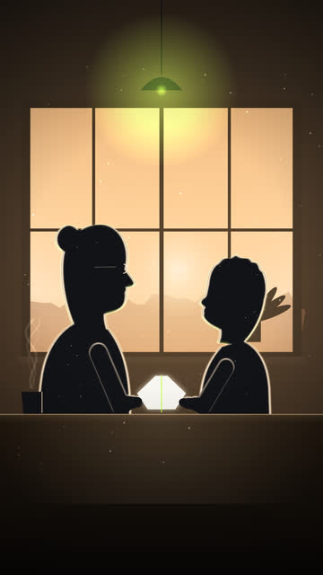
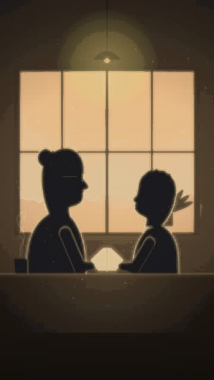

Twenty million videos a day, AI that writes faster than we can read, and one thing nobody can multiply. Here's the story, the numbers, a hands-on "copy of a copy" experiment, and prompts to make your own cinematic explainer.
The story
The explosion. Every day, more than twenty million videos are uploaded to YouTube. Shorts alone get over two hundred billion views a day.
The accelerator. AI now makes content faster than ever: scripts, storyboards, scenes and screens in seconds. One study estimates that nearly half of new web articles are now primarily AI-written.
The one thing we can't multiply. Content scales. Time doesn't. Every one of us still has just twenty-four hours, and every video, post and article competes for a slice of them.
The strange part. When AI keeps learning from its own output without enough real, human-made data, something odd can happen: it slowly loses diversity. The rare, surprising details fade first, until everything drifts towards the same average. Researchers call it model collapse.
The choice. More creators? That's incredible. More noise? That's different. Question what you watch. Verify what you share. Create something worth someone's attention.
The irony. Our film was made with AI voice and rendered with code. It's part of the flood, too. We'd rather say so than pretend otherwise.
Key numbers
20M+
videos uploaded to YouTube every day, on average (2025).
Drag the slider. Each generation is "trained" only on the one before it, with no fresh originals. Watch the detail, contrast and colour drain away.


ILLUSTRATIVE SIMULATION
01 / 20 GENERATIONS
GEN 1 · originalGEN 20 · collapsed
Variety left (illustrative)
Crisp, colourful, full of small details.
This is a visual simulation of the idea (an image repeatedly re-fitted to a simpler copy of itself), not output from a real AI model. Generation numbers are visual steps, not figures from any paper.
Model collapse, in plain English
1. Learning from examples. An AI model learns what text or images look like by studying huge numbers of human-made examples, including the rare, odd and surprising ones.
2. A copy of a copy. If the next model learns mostly from the previous model's output, it's learning from a copy. Copies are a bit smoother and more average than the original, a bit like photocopying a photocopy.
3. The tails disappear. Repeat that loop and the unusual stuff (the "tails") fades first. Over generations, outputs get blander and more alike. The Nature paper calls this model collapse.
4. Real data is the antidote. The researchers found that keeping a share of original, human-made data in training reduces the damage. It's something that can happen in controlled experiments, not proof that today's AI tools are collapsing.
Make your own cinematic explainer
Starter prompts for any general AI assistant. Swap in your own topic and keep every fact sourced.
1 · Concept & story arc
I'm making a 45–60 second vertical (9:16) cinematic explainer about [TOPIC]. Give me 3 concepts, each with a one-line hook built on a striking number, a story arc (scale → acceleration → the limit → the twist → the choice → a self-aware ending), and a 12-panel storyboard with picture + on-screen text per panel.
2 · Narration with dramatic pauses
Write a 110–130 word voiceover for a 55-second explainer about [TOPIC]. Conversational, short sentences, two single-word lines for emphasis, a quiet beat before the twist, and a closing line that turns the topic back on the video itself. Only use facts I can source; list a public source URL for every number.
3 · One continuous camera move
Turn this script into a shot list where the camera never cuts in the final 10 seconds: start on one small human moment on a single phone screen and pull back continuously until it's one of millions forming a bigger shape. For each beat give framing, camera speed, lighting and what appears on screen.
4 · Visual metaphors for an abstract idea
Give me 8 visual metaphors for [ABSTRACT IDEA, e.g. "information overload" or "AI learning from itself"], each filmable in 3–4 seconds without logos or real people. Rate each for clarity on a phone screen in under 1 second, and say which on-screen label keeps it honest (e.g. "Illustrative").
5 · Sound-design brief
Write a sound-design brief for a 55-second explainer with these sections: [LIST]. Give each an ambient bed and spot effects synced to on-screen moments, plan one near-silent section and one hard cut to silence for impact, keep the voice clear on top, and give loudness targets for social video.
6 · Fact-check & disclosure pass
Here is my script and on-screen text: [PASTE]. For every claim, tell me if a primary public source supports it, with the URL and exact quote. Flag wording that could mislead (e.g. "half the internet" vs "half of new web articles"), and write a one-line AI disclosure for the caption.